In this topic, we will cover how to create plots in R. We will first cover scatter plots and how to adjust visuals (axes labels, color-coding, adding a legend). Then, we take a look at other types of commonly used plots (line plots, box plots, histograms) and how to add additional lines or points to your plot. Finally, we cover how to export your figures in high quality.
Plots in R
First, we have to load the data we want to use. In this case, we are using the iris dataset again.
The simplest function to create a plot in R is plot(). By default, it creates a scatterplot. It is suitable especially for plotting two numeric variables against each other. To do so, specify the x and y argument:
plot(x = iris$Petal.Width, y = iris$Petal.Length)
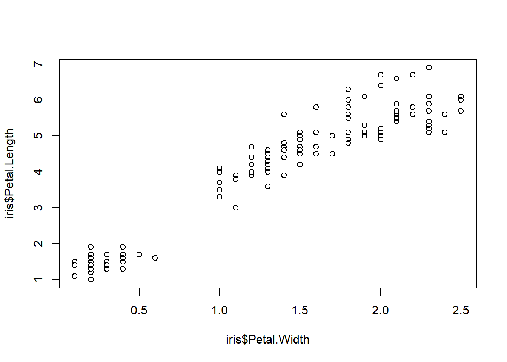
Alternatively, you can write in the so-called formula notation which is written as y ~ x (can be read as “y as a function of x”). The code above would look like this in formula notation:
plot(iris$Petal.Length ~ iris$Petal.Width)
Additional Arguments
Of course, our plot does not look particularly nice right now. We may want to change the axes labels, for instance, to be more descriptive and include units. For this, we can use the xlab and ylab arguments. Using main, we can also set a title for the plot.
plot(iris$Petal.Length ~ iris$Petal.Width,xlab ="Width [cm]", # x axis titleylab ="Length [cm]", # y axis titlemain ="Iris Petal Measurements") # plot title
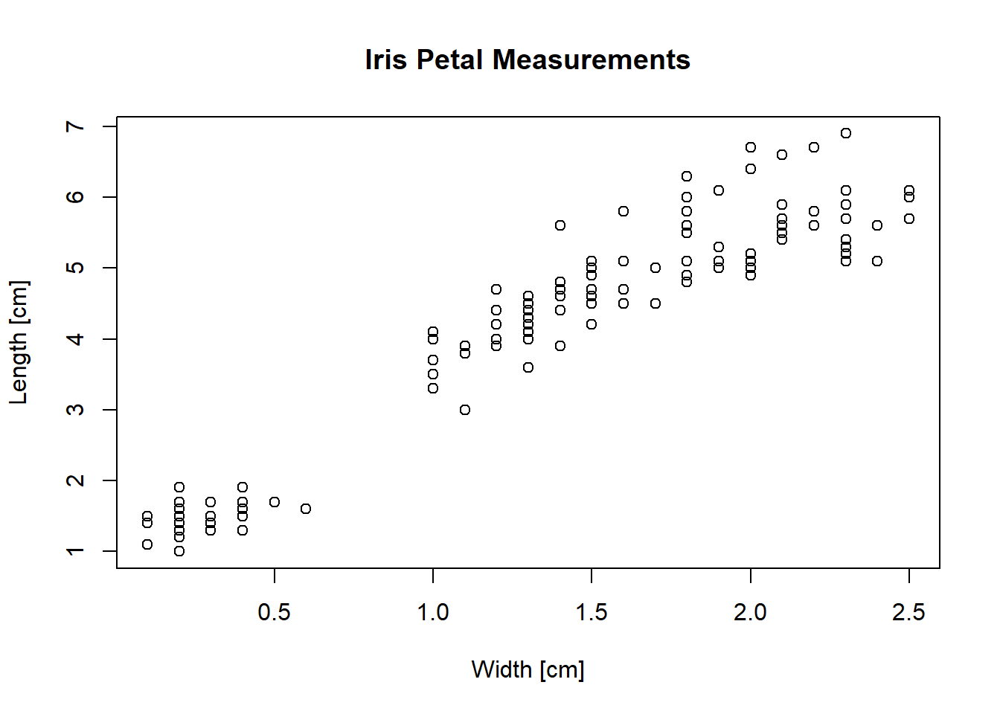
As the iris dataset includes three different species, we might want to visualize these differences in our plot as well. For this, we can add the col argument to specify the color and the pch argument to specify the plotting character.
To vary the color/character based on a variable, that variable should ideally be converted to a factor (already the case for the iris dataset). We then need to provide a vector of colors/plotting characters that matches the number of factor levels. Finally, we provide the values we want to vary the color by in square brackets behind the vector.
R recognizes many colors by name (“red”, “blue”, “green”, …, but also e.g. “salmon1”, “rosybrown3”) that cover a wide variety of shades. You can find an overview of these colors by running colours() or online (for example https://derekogle.com/NCGraphing/img/colorbynames.png).
The plotting character is given as a number between 0 and 25. You can run ?pch for an overview of the plotting characters.
There are many more options that you can find via ?plot and ?par (for additional graphical parameters related to, for example, font size and text colors).
Adding Legends
There is now only one thing to finish our plot: add a legend. You add a function with the command legend() called after the plot command. Specify the location of the legend either as x/y coordinates or as a text (“bottomright”, “topleft”, “center”, …) and use the legend argument to specify the legend entries. For this, you need a vector of the entries. This could be c(setosa, versicolor, virginica) for our three iris species, but in this case, we use the levels() function to automatically extract the levels.
# Creating the plotplot(iris$Petal.Length ~ iris$Petal.Width,ylab ="Length [cm]", xlab ="Width [cm]",col =c("red", "blue", "green")[iris$Species], # change colorpch =c(0, 1, 2)[iris$Species] # change plotting character) # end of the plot() function# Creating the legendlegend("bottomleft", # location legend =levels(iris$Species), # legend texttitle ="species") # legend title
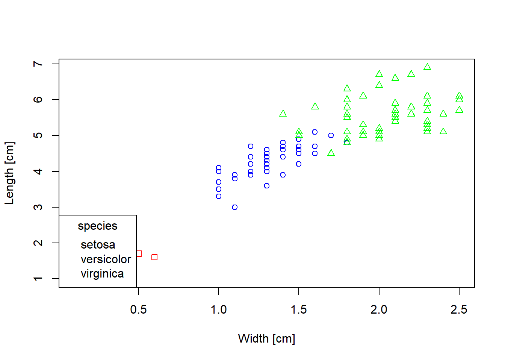
However, our legend still is not very informative. Unfortunately, R does not automatically recognize which color/plotting character is associated with which species. Therefore, we also need to specify this. The arguments are the same as the ones used in plot(): pch and col.
# Creating the plotplot(iris$Petal.Length ~ iris$Petal.Width,ylab ="Length [cm]", xlab ="Width [cm]",col =c("red", "blue", "green")[iris$Species], # change colorpch =c(0, 1, 2)[iris$Species] # change plotting character ) # end of the plot() function# Creating the legendlegend("bottomright", # location legend =levels(iris$Species), # legend textcol =c("red", "blue", "green"), # colorspch =c(0, 1, 2), # plotting characterstitle ="species") # legend title
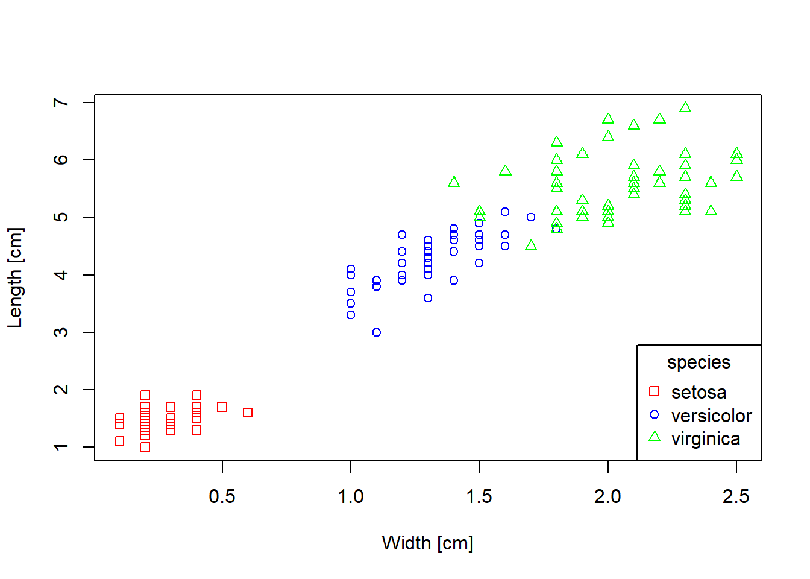
Line Plots
You can also use the plot() function to plot line plots by adding type = "l". Let’s load the Loblolly dataset which describes the growth of different trees over time:
Let’s plot the growth of seed 301 over time. For this, we first need to select seed 301:
Loblolly_301 <- Loblolly[Loblolly$Seed ==301, ]
We can then create a plot:
plot(Loblolly_301$age, Loblolly_301$height, type ="l")
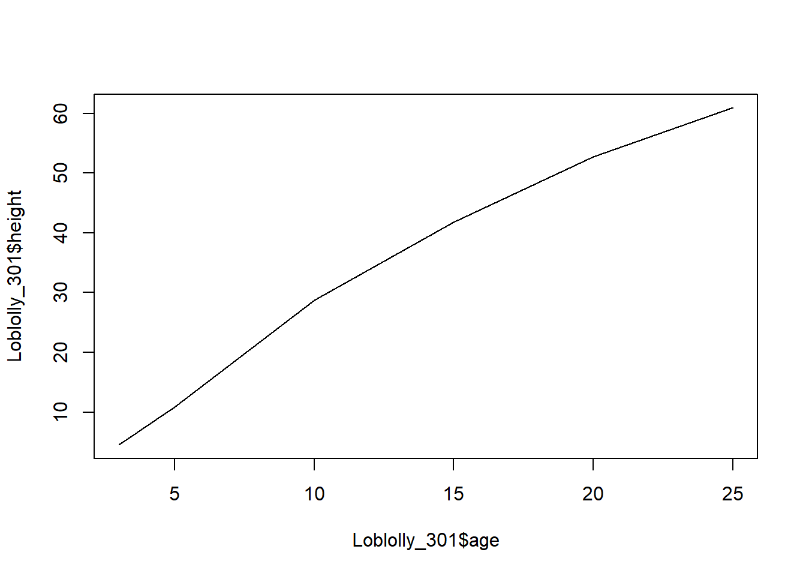
Of course, we can also customize this plot as we could the scatterplot. The arguments lwd (line width) and lty (line type) are especially important here.
plot(Loblolly_301$age, Loblolly_301$height,type ="l",ylab ="height [ft]",xlab ="age [yr]",main ="Loblolly Seed 301",lwd =2, # make line bolderlty ="dotted"# plot dotted line )
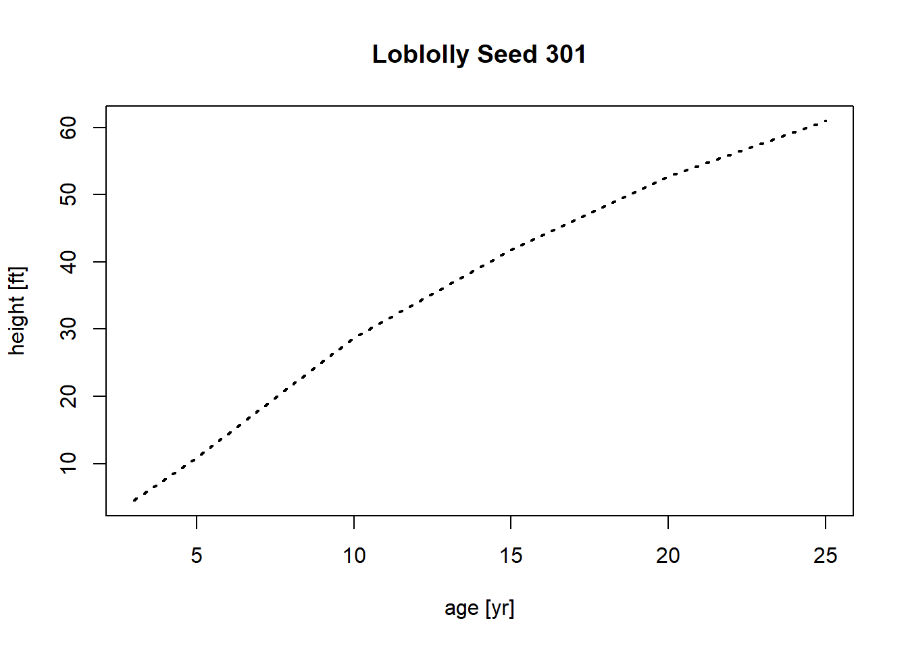
Boxplots
To create a boxplot, use the command boxplot(). Specify the x axis (categorical variable, e.g. species) and y axis (continuous variable, e.g. height) in the formula notation y ~ x.
# Boxplot of Sepal Length of different Iris Speciesboxplot(iris$Sepal.Length ~ iris$Species)
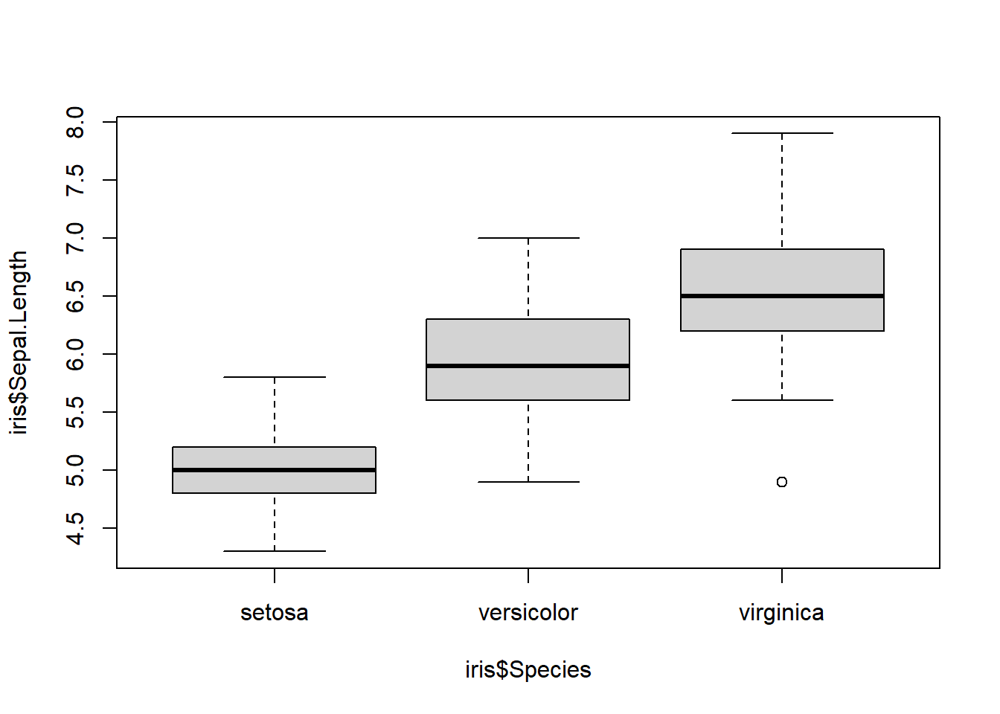
Again, we can adjust the visuals of our plot using the same arguments as in the plot() function.
boxplot(iris$Sepal.Length ~ iris$Species,xlab ="Species",ylab ="Sepal Length [cm]",names =c("iris setosa","iris versicolor","iris virginica"), # change names beneath each boxcol ="#204C14", # fill color of boxplotborder ="grey6"# border color)
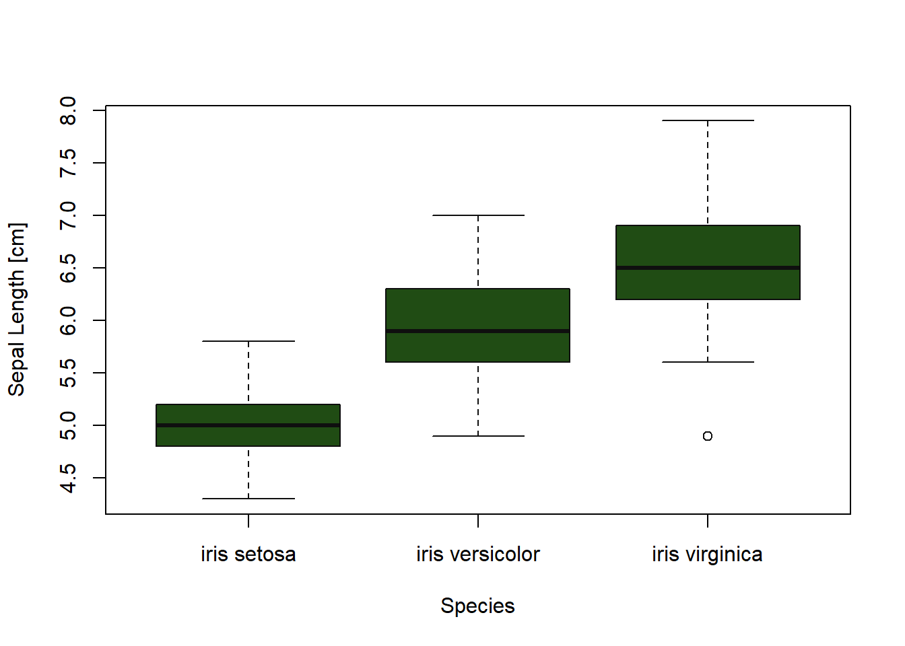
Histograms
To plot a histogram, use the hist() function.
hist(iris$Sepal.Length)
You can set the argument freq to FALSE to plot the probability density on the y axis instead of the counts.
hist(iris$Sepal.Length, freq = F)
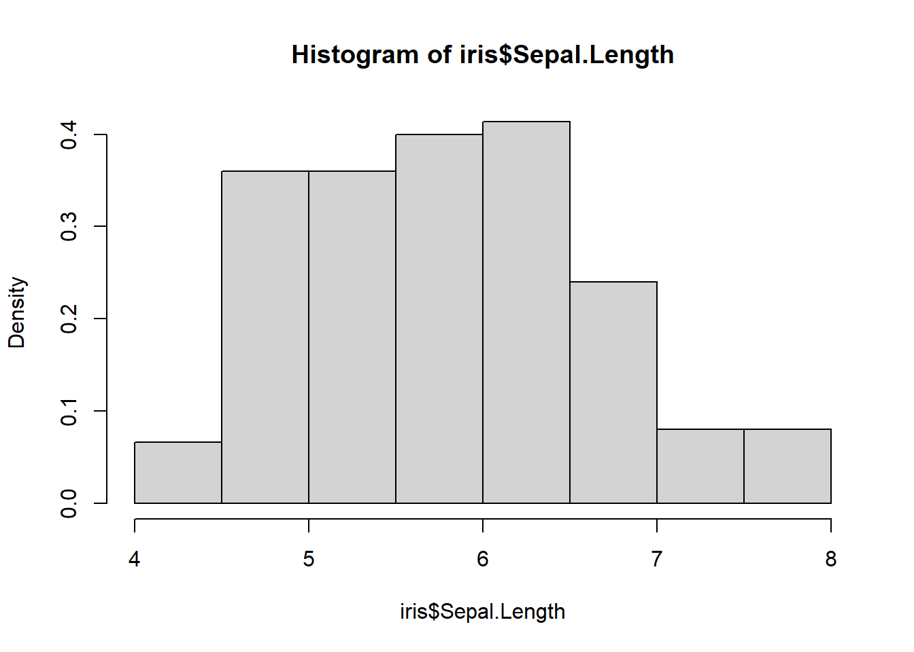
Additional Plot Components
To add a straight line to a plot, use the function abline()after the plot() function. This adds a line on top of your plot. Depending on the arguments given to abline(), you can create a horizontal, vertical, or angled line.
# Creating basic plotplot(Loblolly$height ~ Loblolly$age,xlab ="age [years]", ylab ="height [feet]")# add vertical line at x = 15abline(v =15, col ="red")# add horizontal line at y = 30abline(h =30, col ="blue")# add line with slope = 2, intercept = 0abline(a =0, b =2, col ="green")
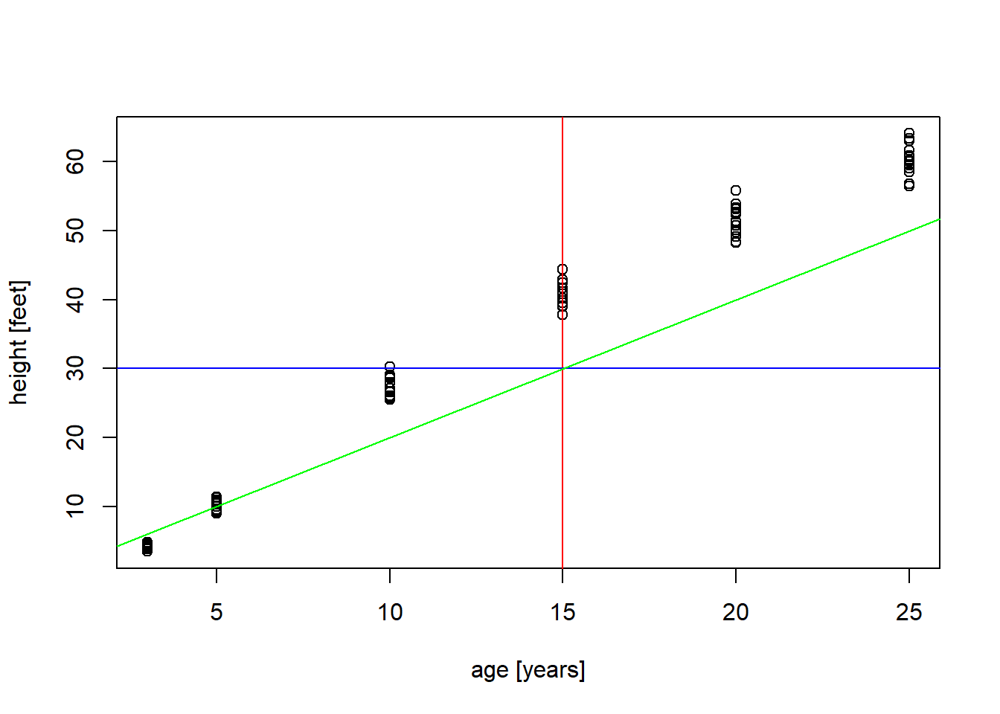
If you want to add additional points (e.g. a second dataset) to your plot, you can use the function points()after the creation of the plot. points() can take many of the same graphical arguments as plot(), so you can adjust color, size, plotting character, … of your points in a similar way.
plot(iris$Sepal.Width ~ iris$Sepal.Length,xlab ="Length [cm]", ylab ="Width [cm]",xlim =c(0, 8), ylim =c(0, 5)) # change y axis limits# add petal width & length as red pointspoints(iris$Petal.Width ~ iris$Petal.Length,col ="red")
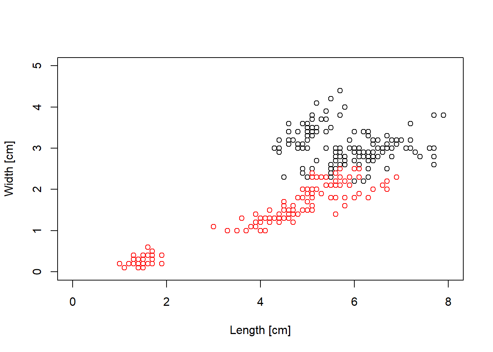
Tip
To add lines, you can use either the lines() function or use type = "l" in the points function.
Finally, you can use curve() to draw any mathematical function into your figure. For example, let’s say we tried to estimate the growth of the Loblolly pine using a logistic equation and now want to compare the equation to our data:
plot(Loblolly$height ~ Loblolly$age,xlab ="age [yr]",ylab ="height [ft]")curve(expr =50/(1+exp(0.35*(10- x))), # function to be plottedfrom =1, to =25, # start and end pointadd = T) # add functio to plot
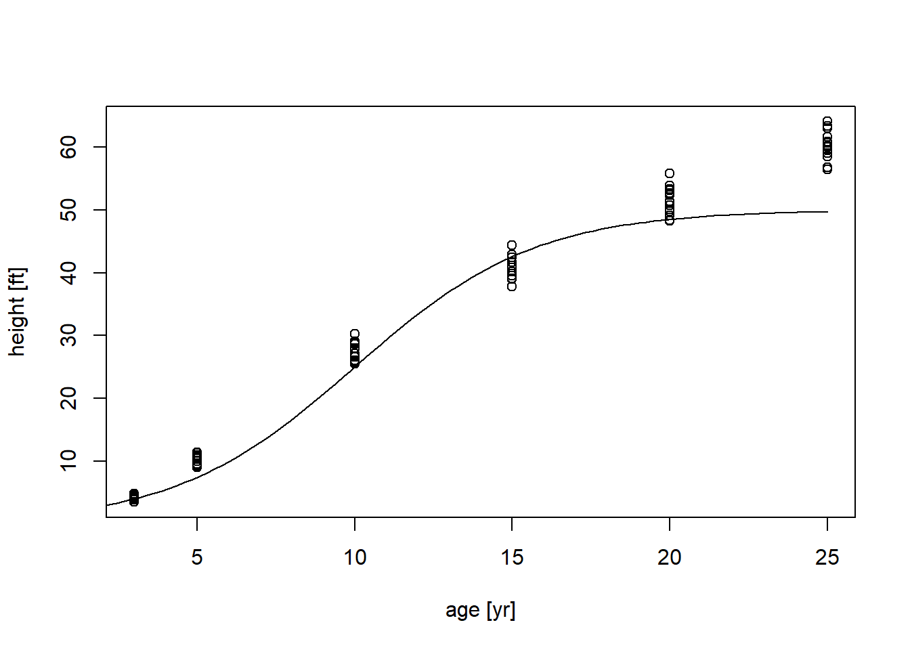
If we don’t add add = T, we create a seperate plot for the function:
# plot a simple quadratic equationcurve(expr = x**2, from =-10, to =10)
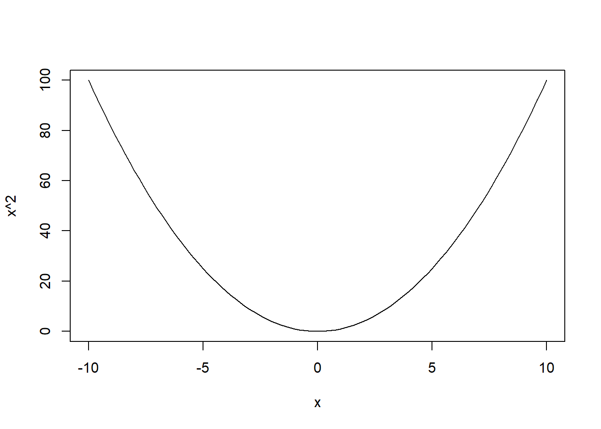
Exporting Plots
To export a plot, you can on the one hand use the “Export” button above the plot view:
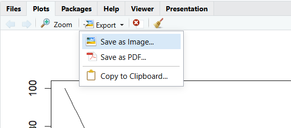
You can then choose a file type and size (in pixels) for your export. However, sometimes you may want to automate saving your figure. Journals might also sometimes require certain figure sizes in cms, font sizes, or qualities that you can’t adjust in the plot export window.
To export a png in code, use the png() function. Then create your plot - it will be automatically be exported to your specified file. Then call dev.off() to reset your graphics device and end the export.
# open png graphics devicepng(filename ="curve.png", # filenamewidth =15, height =15, units ="cm", # set plot dimension in cmres =100) # resolution (ppi) # create plotcurve(expr = x**2, from =-10, to =10)# turn off graphics devicedev.off()
png
2
You can export into other commonly used formats by using pdf(), jpeg(), svg(), or tiff().

{kind=link}